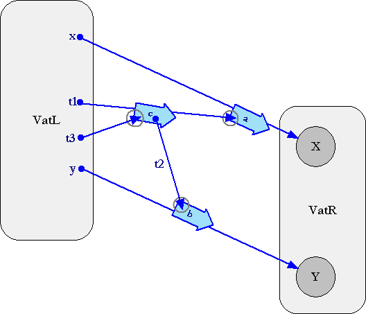

| |
Promise Pipelining |
||||||
Massive Latency Compensation
Example suggested by Darius Bacon. Thanks!
| Conventional RPC | "Dataflow" with Promises | |
|---|---|---|
t3 := (x.a()).c(y.b()) |
t3 := (x <- a()) <- c(y <- b()) |
|
| Expands to... | Expands to... | |
t1 := x.a() t2 := y.b() t3 := t1.c(t2) |
t1 := x <- a() t2 := y <- b() t3 := t1 <- c(t2) |
In a conventional RPC system, each of the three calls on the left requires its own separate round trip. Typically these would be chained, causing the sequence as a whole to require three sequential round trips. Even when making maximal use of available parallelism, the "c(...)" message could not be sent until both "a()" and "b()" had returned, resulting in a minimum delay of two sequential round trips.
By contrast, the right hand side can stream out all three calls directly, without waiting for any round trips. To see why, lets visualize these messages using our standard Granovetter notation:

The key is that later messages can be sent specifying promises for the results of earlier messages as recipients or arguments, despite the fact that these promises are unresolved at the time these messages are sent. This allows VatL to stream out all three messages at the same time, possibly in the same packet.
Often the promise arguments in these messages still won't be resolved when their messages arrive, which is fine. However, often they will, especially in communications patterns that resemble client-server computing. For example, let's suppose VatL is a client-like vat, making use of a service offered by server-like vat VatR. First a() gets delivered to X, which, let's say, computes (finds or generates) a local object T1 as a result. Then b() gets delivered to Y, which, let's say, does the same, resulting in T2. Finally, when c(...) is arrives at VatR, t1 is already resolved to T1, so c(...) gets delivered to T1, with a t2 argument that's already resolved to the local object T2.
Unfortunately, T1 cannot count on the argument being resolved by the time it receives c(...), so this client-server pattern does not enable the code for T1 to be simpler. But it does often allow the typical case to be processed efficiently.
Abstraction vs Efficiency: Mobile Almost-Code
For the sake of modularily, we seek to carve up our systems at good abstraction boundaries. For security, we wish to make divisions at trust and administration boundaries. For partition-survival, we divide to enable continued meaningful (if degraded) operation of the separated components. Fortunately, these three should correlate, and do in practice.
But we'd also like to spread our distributed computations across separate machines according to the performance consequences. The key performance issue is often latency. And as hardware improves, latency will clearly dominate as the limiting factor. At the endpoints, processing will be ever cheaper and buffers larger, with the limits still many orders of magnitude away. At the pipes between these endpoints, bandwidth will likewise increase by many orders of magnitude, but latency will remain limited by the speed of light. Pipes between fixed endpoints can be made wider but not shorter.
In a conventional RPC-based client-server system, if the "t3 := (x.a()).c(y.b())" were sufficiently common, the temptation would be to add a method for this pattern to the server, in order to save the round trip. The client could simply call this "higher level" method. However, this is often at odds with modularity goals. "Higher-level" often means more specialized, or policy rather than mechanism. Good modular systems of abstractions should normally export orthogonal composable primitives which are useful only when composed, but leave it to their clients to determine which composition to use. But this causes the client to compose several invocations to do any one useful thing.
When this tension gets severe, the only real way to resolve it is with real mobile code. The client sends code to the server, such that on arrival the code can locally invoke the orthogonal composable primitives exported by the server. E is designed to support such real mobile code well and securely. But with promise pipelining, E's normal remote invocation can be seen as a lightweight special case of mobile code. The sending side, by making these invocations on remote references, causes the CapTP implementation to encode and send the moral equivalent of an expression involving functional composition (the use of function calls as arguments in other function calls). The receiving side, in decoding and processing these messages is effectively acting as an interpreter for the language these expressions are encoded in.
An important future direction is to reconcile these two forms of mobile code into one uniform mobile code support mechanism.
Related Work
Udanax Gold and Purple has a similar system (dating from the 1991, 1992 time frame), but only for assymetric (ie, client server) two-party communication. However, none of this technology was released until 1999, and was never explained in a published document.
Both "A
Safe, Efficient Object Database Interface Using Batched Futures"
by Phillip Lee Bogle, 1994, and the related
"Increasing
Cross-Domain Call Batching using Promises and Batched Control Structures"
by Quinton Y. Zondervan, 1995, have strong similarities to the Udanax
pipelining work, though discovered independently. (Both were theses done
with Barbara Liskov as their thesis advisor.)
Recently found:
Barbara Liskov and Liuba Shrira. Promises:
linguistic support for efficient asynchronous procedure calls in distributed
systems. In PLDI, pages 260--267, July 1988. (Available
from ACM with subscription)
The Udanax promise architecture influenced the way Joule's network protocol, Indra, implemented distributed Joule Channels. CapTP's pipelining descends directly from this work, although the abstraction it pipelines is more similar to the Udanax Promise than the Joule Channel. Unfortunately, there is no publicly available description of Indra (yet?).
And of course, if you buy the analogy, the rich CPU architecture literature on instruction pipelining with register renaming is all possibly relevant. And since inter-machine pipes are much deeper than instruction pipes, we potentially have a lot more to gain from (approximately) their techniques than they do.
Unless stated otherwise, all text on this page which is either unattributed or by Mark S. Miller is hereby placed in the public domain.
| |
|
report bug (including invalid html)
|
||||||||